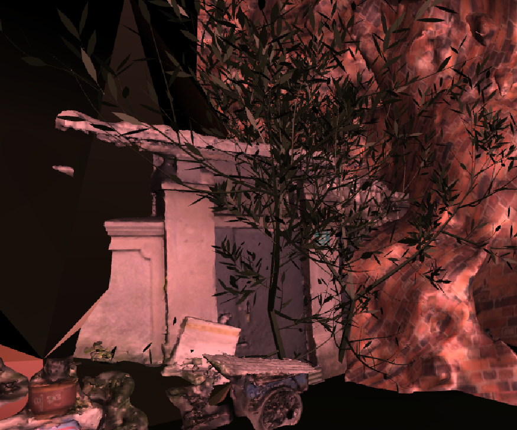
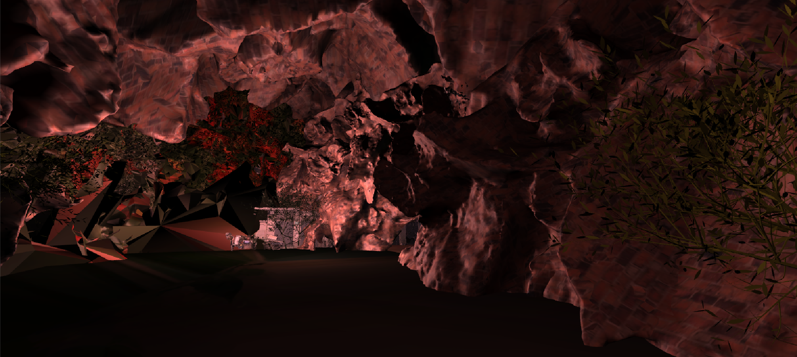
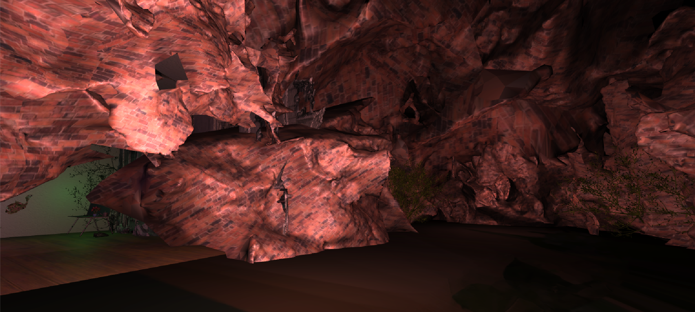
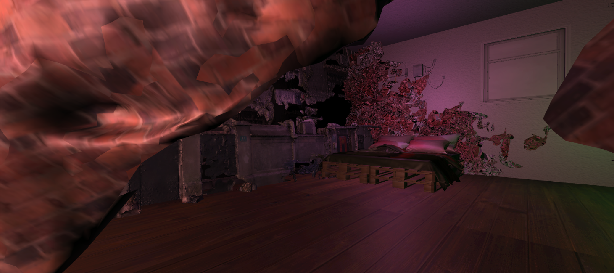
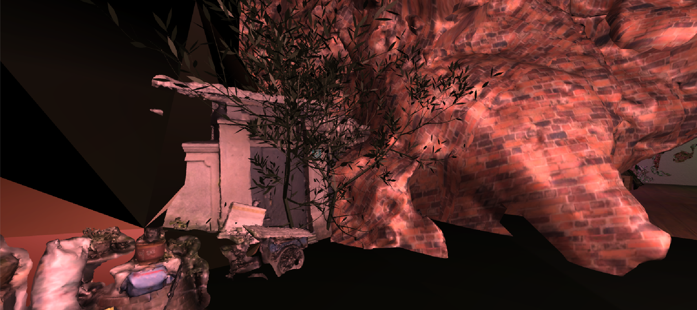
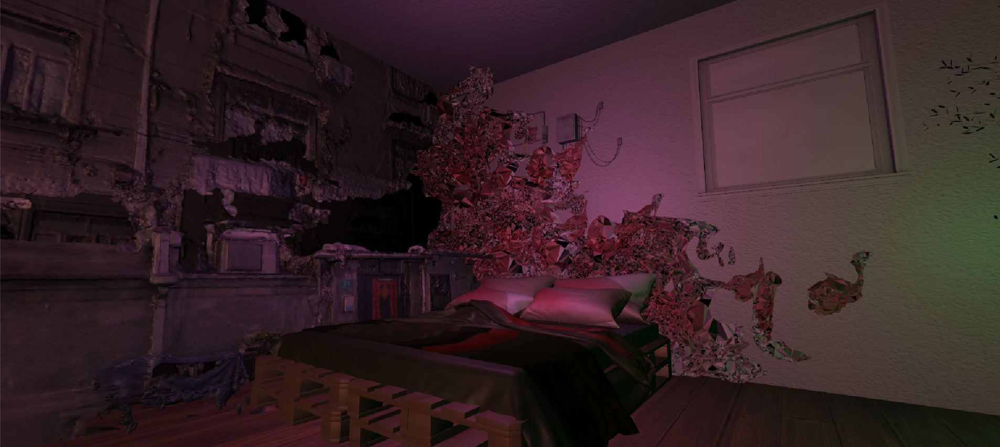
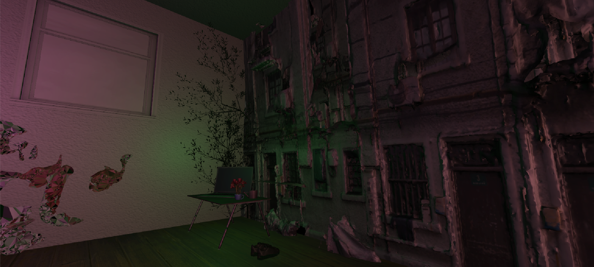
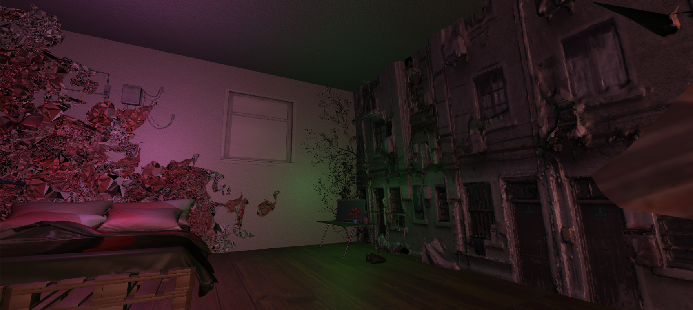

Xintiandi Bedroom
Shanghai, China. Created as an individual academic project at NYU Shanghai. Environment design done through Unity. Model of the wall is a photogrametry model of an apartment complex in the Xintiandi region of Shanghai. Other textures used were either created by me or open sourced. 3DS Max was used to manipulate plant photogrammetry to get organically-texutred models.







